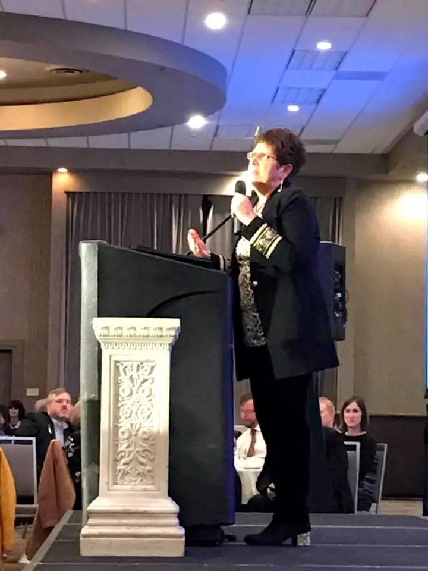
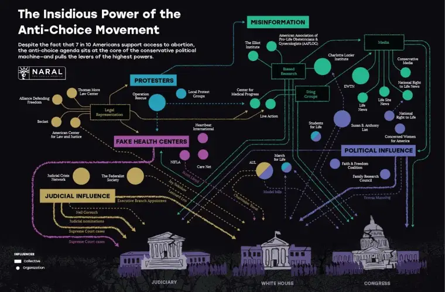

On Monday, I found myself in a room of 1,000 fellow Catholics who share a similar mindset. We were many, but, from what one could see, one in our pro-God, pro-family, pro-love, pro-life mentality of heart.
The banquet was a fundraiser for Real Presence Radio, our local Catholic radio station — part of a modern-day treasure of the Catholic world. Every day, this ministry is changing lives. “People are thirsting for the truth,” as we were reminded that evening. And it’s true.
Our keynote speaker for the evening was Catholic media rock star Teresa Tomeo, award-winning television journalist who left secular media after a profound conversion back to her Catholic faith, and has become a beloved national Catholic radio host. Looking out into the vast crowd, Teresa, who hails from the Detroit area, said ours was the biggest such fundraiser she’d ever keynoted. Impressive for our humble state!

As anyone who listens to Teresa’s morning radio show, “Catholic Connection,” knows, she loves discussing pro-life issues, especially as they’re portrayed in the culture and mainstream media — her former stomping grounds.
Teresa spoke on this topic at a luncheon earlier in the day, too, during her talk, “Bringing America Back to Life,” and in that presentation, she broached the topic of a new report by NARAL, an organization known for its abortion-rights clamoring, titled, “The Insidious Power of the Anti-Choice Movement.” The report, which details its magnified glance at the pro-life movement (from the outside at least), seems something of a frantic scramble to try to figure out how in the world we’ve made the gains we have, painting us as sinister and conniving. I patterned my title here after their own choice of words for their report: “The Preposterous Claims of the Anti-Life Movement.” Because that is exactly what this report is.
Teresa wove part of the report into her evening talk as well, reading out loud on stage the report summary. And as she did, the chuckles began. “This (anti-choice) movement — funded by secret foundations injecting millions into this work — is slowly chipping away at abortion access across the country,” she read. At the word “secret,” Teresa paused momentarily for emphasis, and the crowd collectively laughed.
We laughed because these claims are laughable. When you confront something utterly ridiculous, and you know it (in part because you are living that life and understand it from the inside out), and when you see the irony in all its glory, it’s a lot like responding to a cartoon. Though the underlying matter is quite serious, the portrayal of those of us working to turn the ship of death of around can’t help but release our gasps as giggles.
NARAL includes this visual in its report; a graphic showing the covert operations of my tribe. Take a look at their map. I can just imagine the discussions that ensued as they drew up this baby.

There in blue, you’ll find my type of “operative” — the dreaded “protesters.” Yes, we are part of this “insidious” game. And right under that, you’ll find the violet-colored “Fake Health Centers;” places like FirstChoice Clinic here in Fargo, where scared young women and men come to have ultrasounds, receive education and counseling, connect with a variety of resources, and find loving companions to walk with them in their pregnancy journeys.
Scary stuff!!!
Now, let’s just think about the idea of the “fake health center” for a moment. On the one hand you have abortion facilities which claim to be all about healthcare, but which exist primarily to end the lives of human beings, yet call themselves clinics. The one in Fargo goes by the name of Red River Women’s Clinic. The dictionary definition of a clinic is: “An establishment or hospital department where outpatients are given medical treatment or advice, especially of a specialist nature.” “Medical treatment,” you’d think, would have the end of helping people live, not helping them die.
So which are the real fake health centers?
Teresa likened this whole scenario to the Biblical story of David and Goliath. On one side we’ve got little David stepping out mightily despite understated strength and weapons — that’s us pro-lifers. Then you’ve got Goliath, a larger than life ogre who has all the weapons and money at his disposal — that’s the abortion industry.
That’s why it’s preposterous. The report suggests: “With a clear view of the attacks they’re preparing…we have the strength we need to fight back and demand dignity for every person in this great nation.”
“…demand dignity for every person in this great nation.” I’m hearing the song, “Isn’t it ironic?” resounding.
The reality of what happens in truth in this industry, as shared by Lila Rose from Live Action on Twitter the other day:
Yes, these are real words. This is the inside of THEIR end game.
As for our end game? Hope, based on the power of the creator of this world, our heavenly father, and his son, Jesus Christ, who came to teach us how to live and love. That’s what we’re after. We’re here to capture souls and bring them to the beautiful truth we have discovered. If that’s a secret, it shouldn’t be! And Catholic radio, among many ministries, makes their aim pretty clear — as do events like the annual March for Life. Nothing covert about what we seek! “Love Saves Lives.”
As for the NARAL report, others have noticed it, too. Here’s a great take on the document by Eric Metaxas and Anne Morse, with some encouragement and resources linked at the end.
Now then, I double-dog dare you pro-lifers: keep at it. Keep your spy glasses and black cloaks within reach, continue meeting in your caves with only a candle to light the table, where you plot your next move. Keep speaking in code — you never know who’s watching! And don’t forget your most powerful, super-duper secret weapon of all: prayer.
Remember, fellow coverts, we may be small, but we’ve got truth and life on our side, and a mighty God leading our little conglomeration. “Onward Christian soldiers – Long Live Life!”